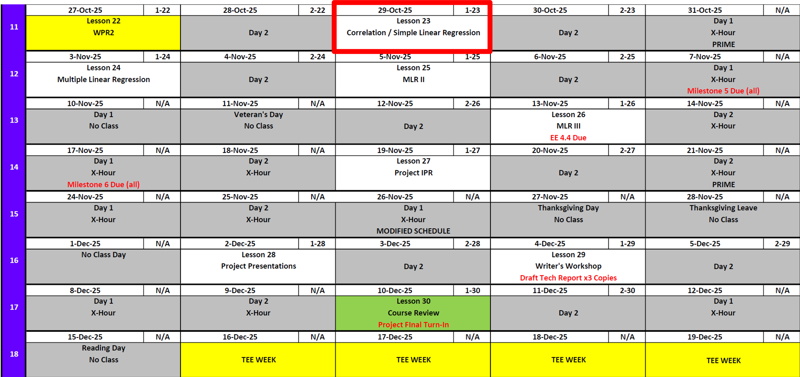

Lesson 23: Correlation & Simple Linear Regression
Lesson Administration
Calendar
Day 1

Day 2
SIL 2 Points
Milestone 5
- Lesson 25.5
- 7 November
- Milestone 5 Instructions
Exploration Exercise 4.4
- Lesson 26
- 12-13 November
- Link: TBD
Milestone 6: Draft Tech Report
- Lesson 26.5
- 17 November
- Milestone 6 Instructions
Project Presentations
Milestone 7
Milestone 8
TEE Times
| Date | Start | End |
|---|---|---|
| Wed, 17 Dec 2025 | 1300 | 1630 |
| Thu, 18 Dec 2025 | 0730 | 1100 |
Cal


Linear Regression
We can see a clear trend here from weight to miles per gallon:

There should be some type of y = mx + b formula that could help us model this relationship or predict a new point in here somewhere.
What about this one?
Or this one?
Or this one?
Are these lines good? Are these lines good enough? Are these lines the best?
Wouldn’t it be nice if we could mathematically decide what the best line is for this?
How would we do that? The idea is that a best line would minimize the red lines in this plot.
How Do We Find the Best Line?
We just saw that some lines fit the data better than others. But we need a mathematical way to decide what “best” means.
Step 1: Define the Residual (Error)
For each point \((x_i, y_i)\), the line makes a prediction:
\[ \hat{y}_i = \beta_0 + \beta_1 x_i \]
The error (residual) is the difference between the actual \(y_i\) and the predicted \(\hat{y}_i\):
\[ \begin{align*} e_i &= y_i - \hat{y}_i \\ &= y_i - (\beta_0 + \beta_1 x_i) \\ &= y_i - \beta_0 - \beta_1 x_i \end{align*} \]
Step 2: Define the Loss Function (Sum of Squared Errors)
We want all the errors to be as small as possible. But errors can be positive or negative, so we square them and add them up:
\[ S(\beta_0, \beta_1) = \sum_{i=1}^n e_i^2 = \sum_{i=1}^n \left(y_i - \beta_0 - \beta_1 x_i\right)^2 \]
This function \(S(\beta_0, \beta_1)\) is our loss function. The “best” line is the one that makes this sum as small as possible.
Step 3: Minimize with Calculus
We take partial derivatives of \(S\) with respect to \(\beta_0\) and \(\beta_1\), set them to zero, and solve.
- Derivative with respect to \(\beta_0\):
\[ \begin{align*} \frac{\partial S}{\partial \beta_0} &= -2\sum_{i=1}^n \left(y_i - \beta_0 - \beta_1 x_i\right) = 0 \\[6pt] &= \sum_{i=1}^n \left(y_i - \beta_0 - \beta_1 x_i\right) = 0 \\[6pt] &= \sum_{i=1}^n y_i - \sum_{i=1}^n \beta_0 - \sum_{i=1}^n \beta_1x_i \\[6pt] &= \sum_{i=1}^n y_i - n\beta_0 - \beta_1 \sum_{i=1}^n x_i \\[6pt] n\beta_0 &= \sum_{i=1}^n y_i - \beta_1 \sum_{i=1}^n x_i \\[6pt] \beta_0 &= \frac{1}{n}\sum_{i=1}^n y_i - \beta_1 \frac{1}{n}\sum_{i=1}^n x_i \\[6pt] \beta_0 &= \bar{y} - \beta_1 \bar{x}. \end{align*} \]
- Derivative with respect to \(\beta_1\):
\[ \begin{align*} \frac{\partial S}{\partial \beta_1} &= -2\sum_{i=1}^n x_i\left(y_i - \beta_0 - \beta_1 x_i\right) = 0 \\[6pt] &= \sum_{i=1}^n \left(x_i y_i - \beta_0 x_i - \beta_1 x_i^2\right) = 0 \\[6pt] &= \sum_{i=1}^n x_i y_i \;-\; \beta_0 \sum_{i=1}^n x_i \;-\; \beta_1 \sum_{i=1}^n x_i^2 = 0 \\[6pt] &= \sum_{i=1}^n x_i y_i \;-\; (\bar y - \beta_1 \bar x)\sum_{i=1}^n x_i \;-\; \beta_1 \sum_{i=1}^n x_i^2 = 0 \\[6pt] &= \sum_{i=1}^n x_i y_i \;-\; (\bar y - \beta_1 \bar x)n \bar x \;-\; \beta_1 \sum_{i=1}^n x_i^2 = 0 \\[6pt] &= \sum_{i=1}^n x_i y_i \;-\; n\bar x \bar y \;+\; \beta_1 n \bar x^2 \;-\; \beta_1 \sum_{i=1}^n x_i^2 = 0 \\[6pt] \beta_1\!\left(\sum_{i=1}^n x_i^2 - n\bar x^2\right) &= \sum_{i=1}^n x_i y_i - n\bar x \bar y \\[6pt] \beta_1 &= \dfrac{\sum_{i=1}^n x_i y_i - n\bar x \bar y}{\sum_{i=1}^n x_i^2 - n\bar x^2} \\[6pt] \beta_1 &= \dfrac{\sum_{i=1}^n x_i y_i - n\bar x \bar y - n\bar x \bar y + n\bar x \bar y}{\sum_{i=1}^n x_i^2 - n\bar x^2 - 2 n \bar x \bar x + 2 n \bar x \bar x} \\[6pt] \beta_1 &= \dfrac{\sum_{i=1}^n x_i y_i - \bar x (n \bar y) - \bar y (n\bar x) + n\bar x \bar y}{\sum_{i=1}^n x_i^2 - n\bar x^2 - 2 \bar x (n \bar x) + 2 n \bar x^2} \\[6pt] \beta_1 &= \dfrac{\sum_{i=1}^n x_i y_i - \bar x \sum_{i=1}^n y_i - \bar y \sum_{i=1}^n x_i + n\bar x \bar y}{\sum_{i=1}^n x_i^2 - n\bar x^2 - 2\bar x \sum_{i=1}^n x_i + 2n\bar x^2} \\[6pt] \beta_1 &= \dfrac{\sum_{i=1}^n (x_i y_i - \bar x y_i - \bar y x_i + \bar x \bar y)}{\sum_{i=1}^n x_i^2 - 2\bar x \sum_{i=1}^n x_i + n\bar x^2} \\[6pt] \beta_1 &= \dfrac{\sum_{i=1}^n (x_i-\bar x)(y_i-\bar y)}{\sum_{i=1}^n x_i^2 - 2\bar x \sum_{i=1}^n x_i + \sum_{i=1}^n \bar x^2} \\[6pt] \beta_1 &= \dfrac{\sum_{i=1}^n (x_i-\bar x)(y_i-\bar y)}{\sum_{i=1}^n x_i^2 - 2\bar x x_i + \bar x^2} \\[6pt] \beta_1 &= \dfrac{\sum_{i=1}^n (x_i-\bar x)(y_i-\bar y)}{\sum_{i=1}^n (x_i-\bar x)^2}. \end{align*} \]
So to sum it up:
\[ \begin{aligned} \beta_1 &= \dfrac{\sum_{i=1}^n (x_i - \bar x)(y_i - \bar y)}{\sum_{i=1}^n (x_i - \bar x)^2} \\[6pt] \beta_0 &= \bar y - \beta_1 \bar x \end{aligned} \]
Step 4: Interpretation
\[ \hat{y}_i = \beta_0 + \beta_1 x_i \]
- \(\hat{\beta}_1\) is the slope — how much \(y\) changes on average when \(x\) increases by 1.
- \(\hat{\beta}_0\) is the intercept — the value of \(y\) when \(x = 0\).
So remember this plot?

These formulas guarantee that our line is the one that minimizes the red “error bars”.
Regression Equation
lm(formula = mpg~wt, data = mtcars)
Call:
lm(formula = mpg ~ wt, data = mtcars)
Coefficients:
(Intercept) wt
37.285 -5.344 So this means
\[ \widehat{mpg} \;=\; 37.39 \;-\; 5.34 \, wt \]
Interpretation
- Intercept (37.39): If a car had zero weight (not realistic, but useful mathematically), the predicted mpg would be 37.39.
- Slope (-5.34): For each additional 1000 lbs of weight, the predicted fuel efficiency decreases on average by about 5.3 mpg.
Significance
How do we know if we can “trust” our slope coefficient, \(\beta_1\)?
We frame this as a hypothesis test:
\[ H_0: \; \beta_1 = 0 \quad \text{(no linear relationship)} \]
\[ H_A: \; \beta_1 \neq 0 \quad \text{(some linear relationship exists)} \]
mod <- lm(mpg ~ wt, data = mtcars)
summary(mod)
Call:
lm(formula = mpg ~ wt, data = mtcars)
Residuals:
Min 1Q Median 3Q Max
-4.5432 -2.3647 -0.1252 1.4096 6.8727
Coefficients:
Estimate Std. Error t value Pr(>|t|)
(Intercept) 37.2851 1.8776 19.858 < 2e-16 ***
wt -5.3445 0.5591 -9.559 1.29e-10 ***
---
Signif. codes: 0 '***' 0.001 '**' 0.01 '*' 0.05 '.' 0.1 ' ' 1
Residual standard error: 3.046 on 30 degrees of freedom
Multiple R-squared: 0.7528, Adjusted R-squared: 0.7446
F-statistic: 91.38 on 1 and 30 DF, p-value: 1.294e-10
For a little more depth
The test statistic here is calculated as
\[ t = \frac{\beta_1 - \text{null}}{SE} = \frac{37.2851}{1.8776} = 19.858 \]
And if you remember…
2 * (1 - pt(abs(19.858), 32))[1] 0Model Fit
How good is this model? One way to measure it is with the coefficient of determination:
\[ R^2 = 0.7528 \]
This means that about 75% of the variation in mpg can be explained by the linear relationship with car weight.
The remaining 25% of the variation is due to other factors not captured by this model (such as horsepower, number of cylinders, transmission type, etc.).
Key Point
- A high \(R^2\) (close to 1) means the model explains a lot of the variation.
- A low \(R^2\) (close to 0) means the model doesn’t explain much variation.
- Here, \(R^2 = 0.75\) suggests the model is quite strong for such a simple one-variable regression.
Board Problem
Do this regression for mpg against hp, drat, and disp.
- Report the regression equation.
- State the hypothesis test and conclusion.
- Decide if each variable has a linear relationship with
mpg.
- Finally, which model is best when it comes to explaining
mpg? Why?
mpg cyl disp hp drat wt qsec vs am gear carb
Mazda RX4 21.0 6 160 110 3.90 2.620 16.46 0 1 4 4
Mazda RX4 Wag 21.0 6 160 110 3.90 2.875 17.02 0 1 4 4
Datsun 710 22.8 4 108 93 3.85 2.320 18.61 1 1 4 1
Hornet 4 Drive 21.4 6 258 110 3.08 3.215 19.44 1 0 3 1
Hornet Sportabout 18.7 8 360 175 3.15 3.440 17.02 0 0 3 2
Valiant 18.1 6 225 105 2.76 3.460 20.22 1 0 3 1
Solution
Step 1: Fit the regression models
Call:
lm(formula = mpg ~ hp, data = mtcars)
Residuals:
Min 1Q Median 3Q Max
-5.7121 -2.1122 -0.8854 1.5819 8.2360
Coefficients:
Estimate Std. Error t value Pr(>|t|)
(Intercept) 30.09886 1.63392 18.421 < 2e-16 ***
hp -0.06823 0.01012 -6.742 1.79e-07 ***
---
Signif. codes: 0 '***' 0.001 '**' 0.01 '*' 0.05 '.' 0.1 ' ' 1
Residual standard error: 3.863 on 30 degrees of freedom
Multiple R-squared: 0.6024, Adjusted R-squared: 0.5892
F-statistic: 45.46 on 1 and 30 DF, p-value: 1.788e-07- Model 1 (hp):
\[\widehat{mpg}=30.10-0.07\,hp\]
\(H_0:\;\beta_1=0 \quad \text{(no linear relationship)}\)
\(H_A:\;\beta_1\neq 0 \quad \text{(linear relationship exists)}\)
- \(p<0.001\) → reject \(H_0\), horsepower is significantly related to mpg.
- \(R^2=0.602\) → explains ~60% of variation.
Call:
lm(formula = mpg ~ drat, data = mtcars)
Residuals:
Min 1Q Median 3Q Max
-9.0775 -2.6803 -0.2095 2.2976 9.0225
Coefficients:
Estimate Std. Error t value Pr(>|t|)
(Intercept) -7.525 5.477 -1.374 0.18
drat 7.678 1.507 5.096 1.78e-05 ***
---
Signif. codes: 0 '***' 0.001 '**' 0.01 '*' 0.05 '.' 0.1 ' ' 1
Residual standard error: 4.485 on 30 degrees of freedom
Multiple R-squared: 0.464, Adjusted R-squared: 0.4461
F-statistic: 25.97 on 1 and 30 DF, p-value: 1.776e-05- Model 2 (drat):
\[\widehat{mpg}=-7.52+7.68\,drat\]
\(H_0:\;\beta_1=0 \quad \text{(no linear relationship)}\)
\(H_A:\;\beta_1\neq 0 \quad \text{(linear relationship exists)}\)
- \(p<0.001\) → reject \(H_0\), drat is significantly related to mpg.
- \(R^2=0.464\) → explains ~46% of variation.
Call:
lm(formula = mpg ~ disp, data = mtcars)
Residuals:
Min 1Q Median 3Q Max
-4.8922 -2.2022 -0.9631 1.6272 7.2305
Coefficients:
Estimate Std. Error t value Pr(>|t|)
(Intercept) 29.599855 1.229720 24.070 < 2e-16 ***
disp -0.041215 0.004712 -8.747 9.38e-10 ***
---
Signif. codes: 0 '***' 0.001 '**' 0.01 '*' 0.05 '.' 0.1 ' ' 1
Residual standard error: 3.251 on 30 degrees of freedom
Multiple R-squared: 0.7183, Adjusted R-squared: 0.709
F-statistic: 76.51 on 1 and 30 DF, p-value: 9.38e-10- Model 3 (disp):
\[\widehat{mpg}=29.60-0.04\,disp\]
\(H_0:\;\beta_1=0 \quad \text{(no linear relationship)}\)
\(H_A:\;\beta_1\neq 0 \quad \text{(linear relationship exists)}\)
- \(p<0.001\) → reject \(H_0\), displacement is significantly related to mpg.
- \(R^2=0.718\) → explains ~72% of variation.
Step 2: Compare models
- All three predictors (
hp,drat,disp) show significant evidence of a linear relationship with mpg.
- Among them, displacement (disp) has the highest \(R^2\) (0.718), meaning it explains the most variation in mpg.
- Therefore, the simple regression with displacement is the best single-variable model for predicting mpg in this dataset.
Answer: Displacement (\(disp\)) gives the best simple linear regression model for mpg because it explains the largest proportion of variation (\(R^2=0.72\)).
Before you leave
Today:
- Any questions for me?
Upcoming Graded Events
- WPR 2: Lesson 22